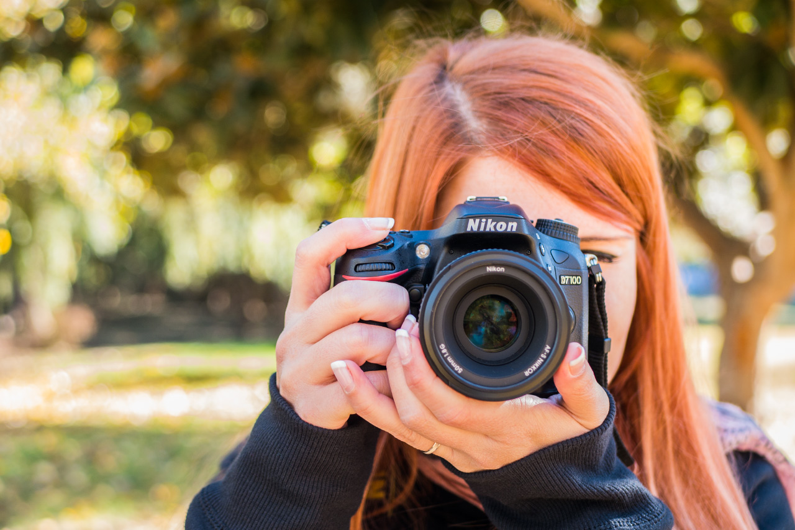

Tipos de fotografía

Fotografía publicitaria. La que alimenta la publicidad o el marketing, o sea, la promoción de bienes y servicios de consumo. Usualmente se la interviene digitalmente y se le hacen “correcciones” para hacerla más seductora.
Fotografía de modas. Se toma en desfiles y eventos de moda, para mostrar prendas de vestir, peinados, maquillaje, etc. Va de la mano con la publicitaria, pero no suele hacérsele intervenciones digitales.
Fotografía documental. Llamada también histórica o periodística, pues se hace con fines informativos, de reportaje, de valor histórico o de denuncia.
Fotografía paisajística. Se toma para reproducir la belleza natural de un paisaje, ya sea una tomas aérea, terrestre o submarina. Suelen ser abiertas y de mucho color.
Fotografía científica. Se toma a través de telescopios, microscopios y otras herramientas científicas, con el fin de mostrar lo que comúnmente no se puede a simple vista.
Fotografía artística. La que se toma con propósitos estéticos o experimentales, como montajes, composiciones, etc.
Fotografía de retrato. Equivalente a la pintura de retratos de épocas pasadas, tiene el propósito de mostrar a alguien querido, o célebre, o hermoso, en algún momento determinado de su vida.
Podemos hablar de distintos tipos de fotografía dependiendo de su contexto: